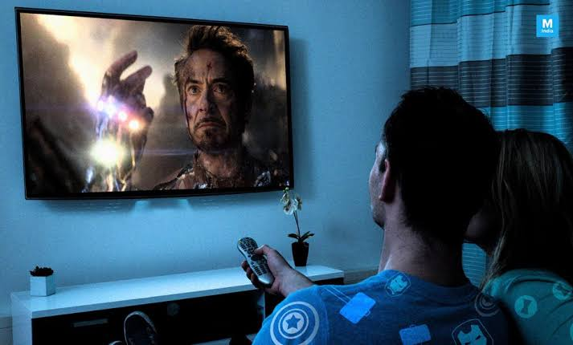

Deskripsi Diri
Saya ingin menceritakan sedikit tentang deskripsi diri saya, Nama saya Simon Aditia. Sebuah nama sederhana yang memiliki arti Pendengar yang baik / dalam bahasa Kristiani Tuhan mendengar dan Aditia memiliki arti matahari,surya. Teman-teman biasa memanggil saya Simon. Saya lahir di Bekasi, pada tanggal 26 Oktober 2001, tapi diakte kelahiran saya lahir di jakarta karena pada saat itu dibuat akte kelahiran nya di jakarta. Saya anak kedua dari empat bersaudara dan tinggal di Kota Bekasi.
Mengenai kepribadian, saya memiliki sifat yang periang, ramah, dan baik hati karena saya senang membantu teman yang sedang kesulitan dalam memahami pelajaran dan senang bergaul. Saya juga tipe orang yang mau bekerja keras dalam setiap pekerjaan yang sedang saya jalani agar pekerjaan tersebut bisa menghasilkan sesuatu yang maksimal. Namun, saya juga memiliki beberapa sifat yang buruk. Saya masih sering egois, saya pun berusaha untuk mengatasi sifat buruk itu dengan berusaha belajar mandiri.
Pendidikan
Pada awal pendidikan saya, saya mulai dari masa taman kanak-kanak pada tahun 2006, Saya TK di TK Purbo Utomo disitu saya mendapatkan banyak teman, tapi entah kenapa sekarang saya tidak berkomunikasi atau hilang kontak dengan mereka. Dan saya lulus dari Taman Kanak-kanak pada tahun 2007, pada saat itu saya langsung TK B, tidak melalui TK A atau paud.
Saya melanjutkan pendidikan di Sekolah Dasar pada tahun 2007, yaitu di SDN Kayuringin Jaya 2, disitu saya belajar selama 6 tahun, saya mendapatkan guru dan teman yang baik-baik, sama seperti di TK saya pun kehilangan kontak kepada teman-teman saya. Pada tahun 2013 saya lulus dibangku Sekolah Dasar.
Kemudian saya melanjutkan pendidikan di Sekolah Menengah Pertama pada tahun 2013, yaitu di SMP Negeri 4 Kota Bekasi. Selama tiga tahun saya melalui masa-masa SMP dengan tekun dan rajin belajar. Tapi sama seperti di TK dan SD entah mengapa saya pun kehilangan kontak dengan teman-teman saya. Saya lulus dibangku Sekolah Menengah Pertama pada tahun 2016 dengan nilai yang memuaskan.
Saya pun melanjutkan pendidikan di Sekolah Menengah Kejuruan pada tahun 2016, yaitu di SMK Negeri 1 Kota Bekasi jurusan RPL (Rekayasa Perangkat Lunak). Saya belajar banyak hal-hal yang baru, saya tadinya cukup kaku dengan yang namanya komputer, apalagi membuat program. Tapi disana saya diajari dari hal dasar yang tidak saya ketahui hingga ke tingkat yang lumayan sulit. Dan pada tahun 2019 saya lulus di SMK Negeri 1 Kota Bekasi. Tidak seperti di TK,SD, atau SMP, saya masih berkomunikasi dengan teman saya di media sosial Facebook.
Setelah saya lulus SMK, saya mendaftar Polisi di Polres Bekasi Kota, setelah saya mengikuti tes, tetapi Tuhan berkehendak lain, saya tidak lulus menjadi polisi. Saya pun melanjutkan pendidikan ke lingkungan Universitas, saya mendaftar di Universitas Bhayangkara Jakarta Raya Fakultas Teknik Jurusan Teknik Informatika angkatan 2019. Dan pada saat ini semester dua. Rupa nya saya bertemu dengan teman SMP saya, saya pun sekelas dengan nya.
Saya memiliki cita-cita menjadi seorang programmer profesional. Saya bertekad menyelesaikan kuliah di jurusan Teknik Informatika dalam 3.5 atau 4 tahun, kemudian mencari pengalaman diluar sana untuk mengasah skill saya. Tentu nya dibutuhkan usaha yang kuat untuk mewujudkan cita-cita itu. Dan saya akan berusaha giat belajar untuk mencapainya.
Hobi Saya

My Skill
HTML
85%
CSS
70%
JavaScript
55%
PHP
70%
MySQL
65%